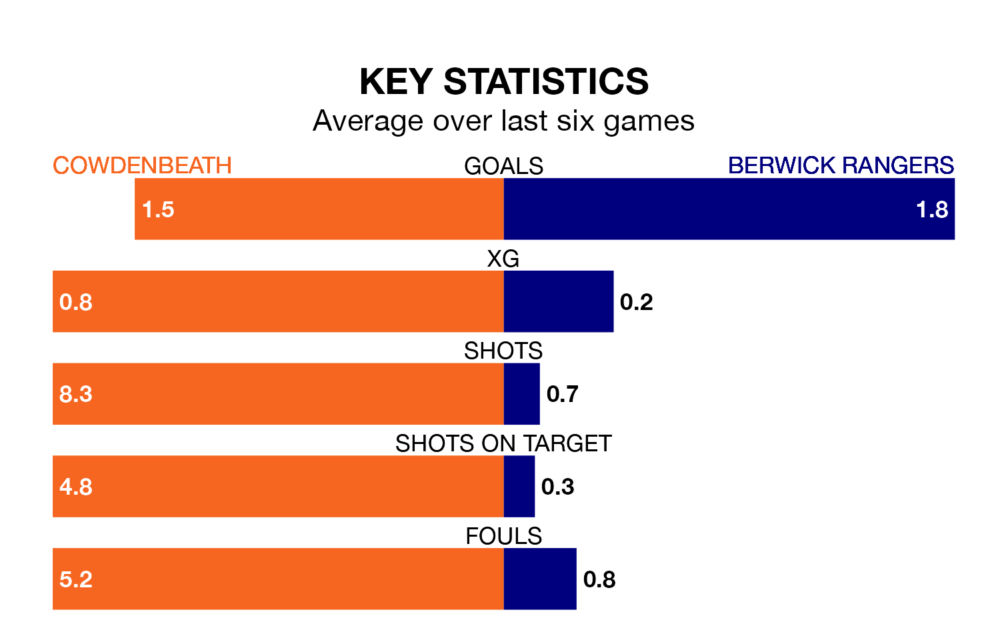

Berwick Rangers travel to Cowdenbeath on Saturday in the Lowland Football League.
The visitors come into the game on the back of a win in their last match, having beaten Gretna 2008 3-0 at home.
Cowdenbeath also won their last match, 2-0 against Edinburgh University.
In the last 10 years, Cowdenbeath and Berwick have played each other on 16 occasions. Cowdenbeath won six of them, Berwick eight, and they drew twice.
On average, Cowdenbeath scored 1.2 goals and Berwick 1.1 in those matches.
Their last meeting was on September 2, when Cowdenbeath won 2-0 away.
With 35 goals in 29 games so far this season, Berwick are scoring at below the league average rate with 1.2 goals per game. But they are conceding fewer than average too, letting in 36 goals at a rate of 1.2 per game.
Cowdenbeath are also below average scorers, with 1.6 goals per game, compared to a league average of 1.7. They have conceded 1.5 goals per game.
Rangers are 12th in the table after 29 games, of which they have won 11 and drawn five, earning 38 points.
The hosts are one place ahead of the away side in 11th, with 10 wins and 10 draws putting them on 40 points.
Cowdenbeath are in mixed form in the Lowland Football League, with three wins and a draw from their last six games.
With four wins and two losses over that period, Berwick's form is slightly better – they have taken 12 points from 18, compared to Cowdenbeath's 10.
Updated: 15:10 (UTC), 15/03/24